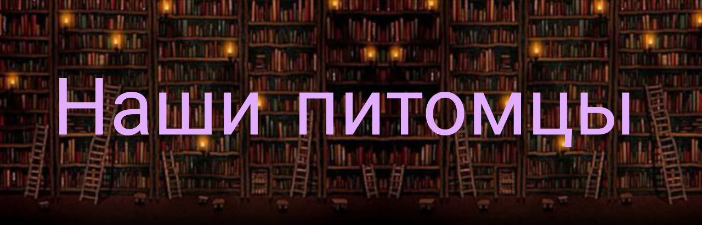

Добро пожаловать в «Книголов» — место, где книги находят своих читателей, а читатели — свои сокровища.
Название нашего магазина — это не просто игра слов. Это наша философия. Мы верим, что процесс поиска книги сродни увлекательной охоте: ты ищешь зацепки, следуешь за рекомендациями-следами и в итоге попадаешь в самую точку, добывая долгожданный трофей.
Чем мы занимаемся?
Расставляем сети: Наши полки — это тщательно собранные приманки от классики до новейших бестселлеров, от независимых издательств до манги и комиксов.
Выдаем лицензии: Наши сотрудники — бывалые книголовы. Они помогут вам сориентироваться в литературных дебрях и подскажут, куда направить прицел вашего внимания.
Организуем привалы: У нас можно не только «поохотиться», но и остаться на привал — выпить кофе, обсудить добычу с другими книголовами в нашем уютном уголке или на читательском клубе.
«Книголов» — это сообщество. Сообщество тех, кто любит шелест страниц, запах свежей типографской краски и азарт поиска. Присоединяйтесь к нашей охоте. Ваша лучшая книга уже ждет, затаившись на полке.

Филиал «Старый Город»
(Расположен в историческом здании, специализируется на классике, исторических романах и философии)
- Барсик, кот-архивариус.
- Порода: Британский короткошёрстный.
- Характер: Важный, неторопливый, вальяжный. Кажется, что он читал все книги в своем филиале и находит современную литературу несколько легкомысленной.
- Обязанности: Встречает гостей у входа, проверяя, достойны ли они войти в храм мудрости. Часто спит на стопке старых фолиантов, изображая из себя ожившую иллюстрацию.
- Любимое место: Кресло-качалка у камина (электрического, но очень атмосферного).
- Сова, мудрая сова.
- Порода: Неясыть.
- Характер: Молчаливая, проницательная. Не любит суеты.
- Обязанности: Официально — живой талисман и истребитель книжной моли. Неофициально — хранитель самых сложных трактатов по философии. Говорят, если она на вас посмотрит, вы найдете ответ на мучивший вас вопрос.
- Любимое место: Полка с трудами Гегеля и Канта.
Филиал «Авангард»
(Футуристичный лофт, посвященный научной фантастике, фэнтези и графическим романам)
- Зорк, борзой-инопланетянин.
- Порода: Венгерская агарь.
- Характер: Энергичный, любопытный, с постоянно удивленным взглядом. Его длинная морда и аэродинамическая форма создают полное впечатление, что он прибыл из далекой галактики.
- Обязанности: Провожать посетителей до секции новинок и следить, чтобы никто не пропустил новую книгу Энди Вейера.
- Любимое место: У дивана в форме космического корабля.
Гэндальф, ворон-пророк.
Порода: Ворон.
Характер: Загадочный, ироничный. Обожает эффектно появляться и каркать в самые напряженные моменты чтения.
Обязанности: Создавать правильную атмосферу для фэнтези. Иногда ворует блестящие закладки и прячет их в своем гнезде на балке под потолком.
Любимое место: Ряд с магическими романами и славянским фэнтези.
Филиал «Уют»
(Расположен в историческом здании, специализируется на классике, исторических романах и философии)
- Булочка, корги-кондитер.
- Порода: Вельш-корги.
- Характер: Добродушная, немного пушистая, обожает, когда ее гладят.
- Обязанности: Греться на залитой солнцем полке, создавать уют и помогать выбирать самые «вкусные» книги. Ее можно часто найти спящей на стопке кулинарных детективов.
- Любимое место: Под столом рядом с кофемашиной, на случай если кто-то уронит печенье.
- Шерлок, такса-сыщик.
- Порода: Такса.
- Характер: Надменный, внимательный к деталям. Ходит по магазину с важным видом, как будто ведет расследование.
- Обязанности: Обнюхивать сумки посетителей (на предмет наличия запрещенных электронных книг, шутят сотрудники). На самом деле, следит за порядком в отделе детективов.
- Любимое место: У полки с Агатой Кристи и Борисом Акуниным.
Филиал «Лабиринт»
(Большой, запутанный филиал в несколько этажей, где можно заблудиться. Ассортимент: нон-фикшн, научпоп, путешествия, искусство)
- Ариадна, черепаха-проводник.
- Порода: Сухопутная черепаха.
- Характер: Спокойная, мудрая, неспешная.
- Обязанности: Неспешно путешествовать по лабиринту стеллажей. Считается, что если последовать за ней, она выведет вас к книге, которая вам нужна, даже если вы сами этого не знали.
- Любимое место: Солярий под специальной лампой в отделе книг по географии.
- Кнопка, дегу-исследователь.
- Порода: Дегу (чилийская белка).
- Характер: Юркий, неутомимый, любознательный.
- Обязанности: Изучать самые узкие и потаенные уголки лабиринта. Сотрудники следят, чтобы он не пробовал книги на зуб, особенно по естественным наукам.
- Любимое место: Трехуровневый лабиринт в витрине, стилизованный под книжные полки.